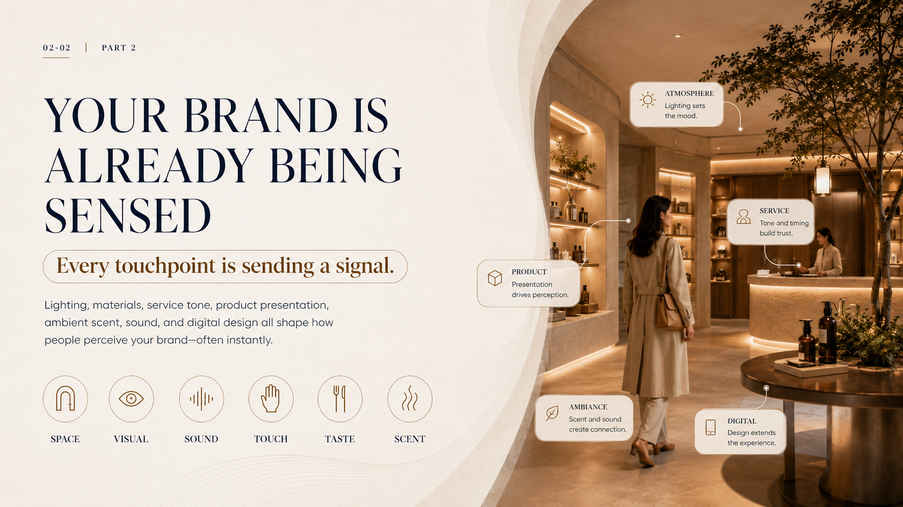
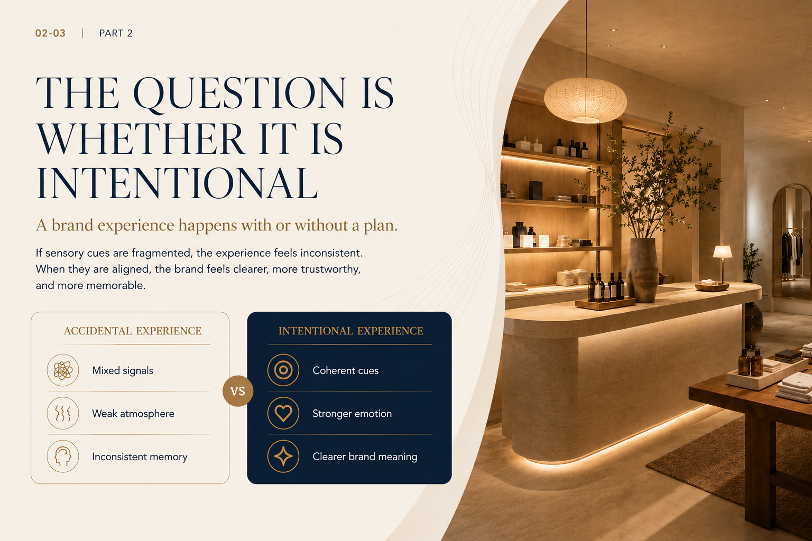
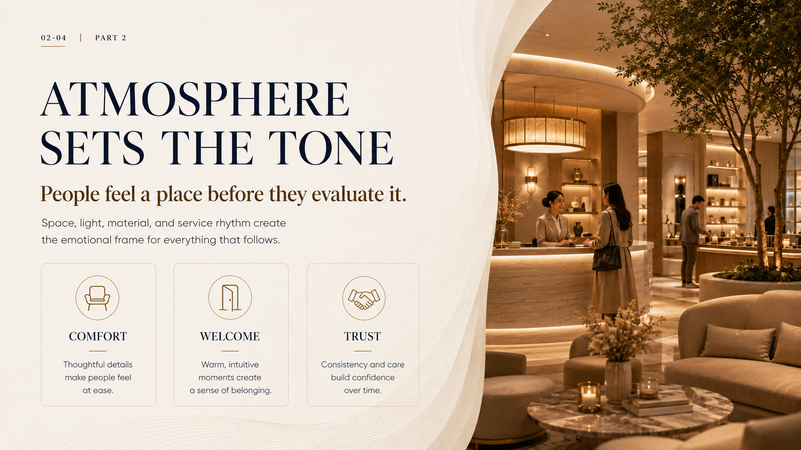
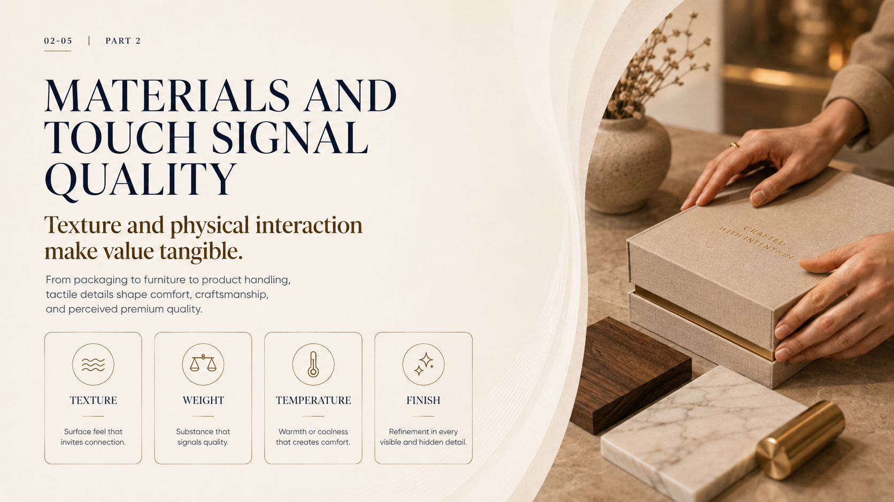
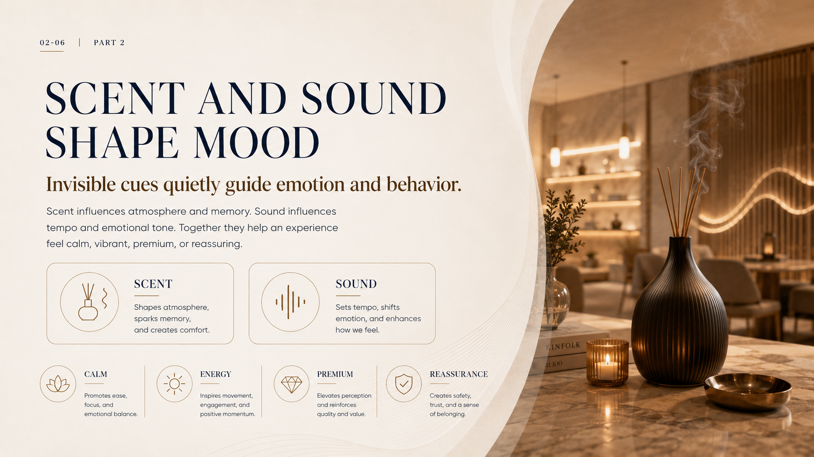
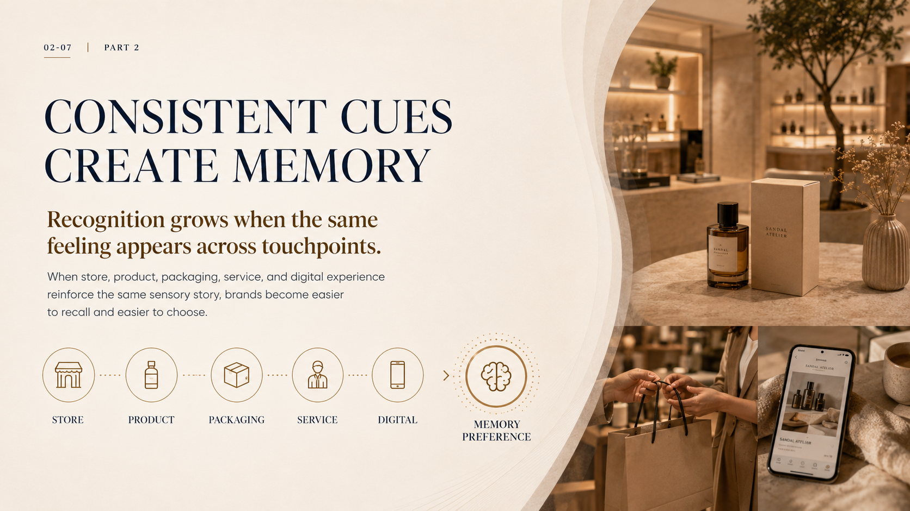
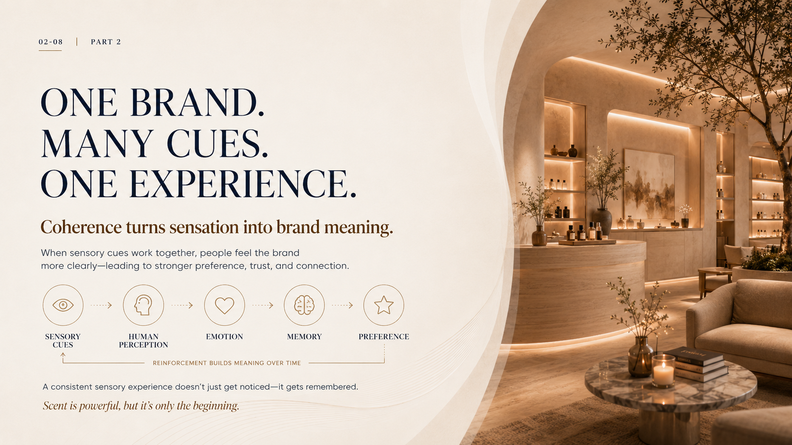

Atmosphere
Lighting sets the mood.
Every brand is already a sensory experience
Every touchpoint is sending a signal.
Lighting, materials, service tone, product presentation, ambient scent, sound, and digital design all shape how people perceive your brand, often instantly.

Lighting sets the mood.
Tone and timing build trust.
Presentation drives perception.
Scent and sound create connection.
Design extends the experience.

Sensory strategies
A brand experience happens with or without a plan.
If sensory cues are fragmented, the experience feels inconsistent. When they are aligned, the brand feels clearer, more trustworthy, and more memorable.
Sensory strategies
People feel a place before they evaluate it.
Space, light, material, and service rhythm create the emotional frame for everything that follows.

Thoughtful details make people feel at ease.
Warm, intuitive moments create a sense of belonging.
Consistency and care build confidence over time.

Sensory strategies
Texture and physical interaction make value tangible.
From packaging to furniture to product handling, tactile details shape comfort, craftsmanship, and perceived premium quality.
Surface feel that invites connection.
Substance that signals quality.
Warmth or coolness that creates comfort.
Refinement in every visible and hidden detail.
Sensory strategies
Invisible cues quietly guide emotion and behavior.
Scent influences atmosphere and memory. Sound influences tempo and emotional tone. Together they help an experience feel calm, vibrant, premium, or reassuring.
Shapes atmosphere, sparks memory, and creates comfort.
Sets tempo, shifts emotion, and enhances how we feel.

Promotes ease, focus, and emotional balance.
Inspires movement, engagement, and positive momentum.
Elevates perception and reinforces quality and value.
Creates safety, trust, and a sense of belonging.

Sensory strategies
Recognition grows when the same feeling appears across touchpoints.
When store, product, packaging, service, and digital experience reinforce the same sensory story, brands become easier to recall and easier to choose.
Sensory strategies
Coherence turns sensation into brand meaning.
When sensory cues work together, people feel the brand more clearly, leading to stronger preference, trust, and connection.

Reinforcement builds meaning over time
A consistent sensory experience doesn't just get noticed. It gets remembered.